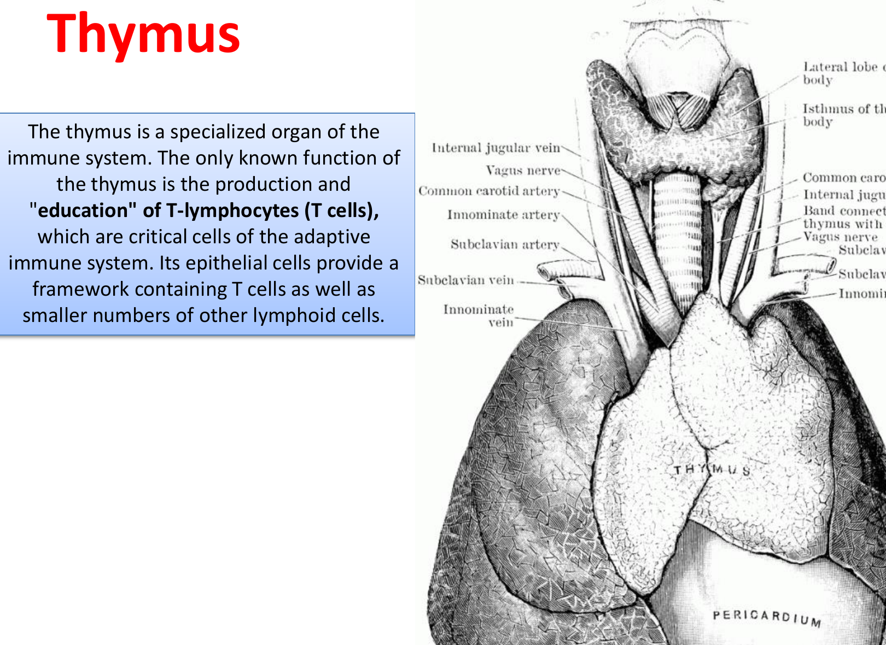
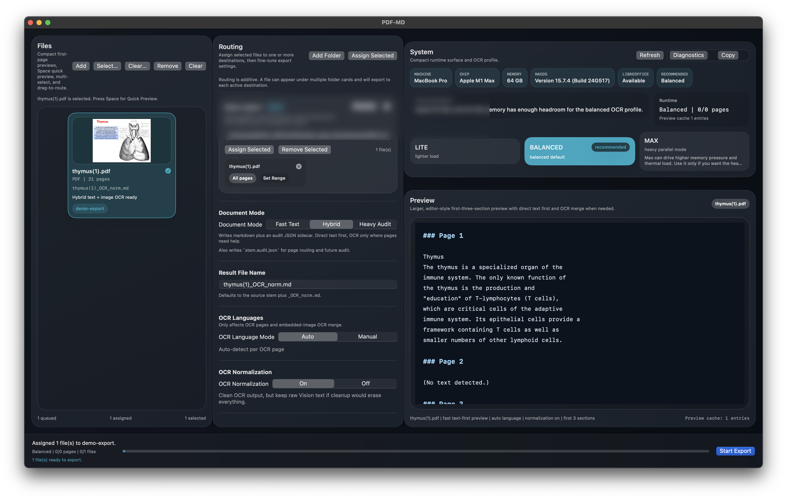
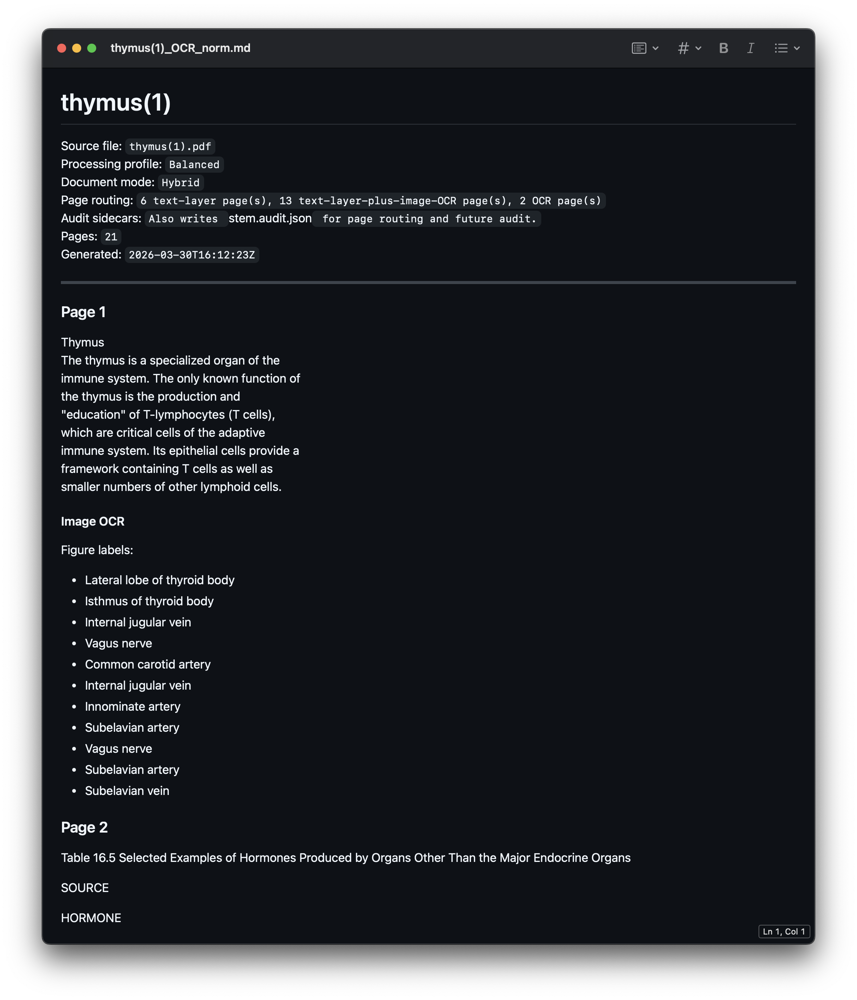
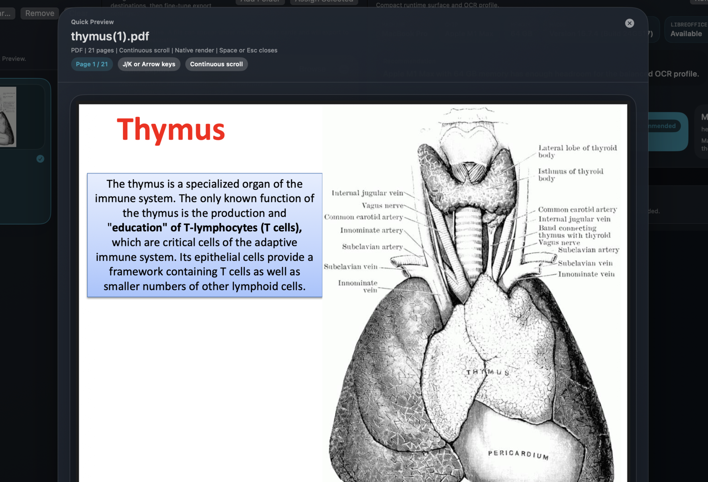
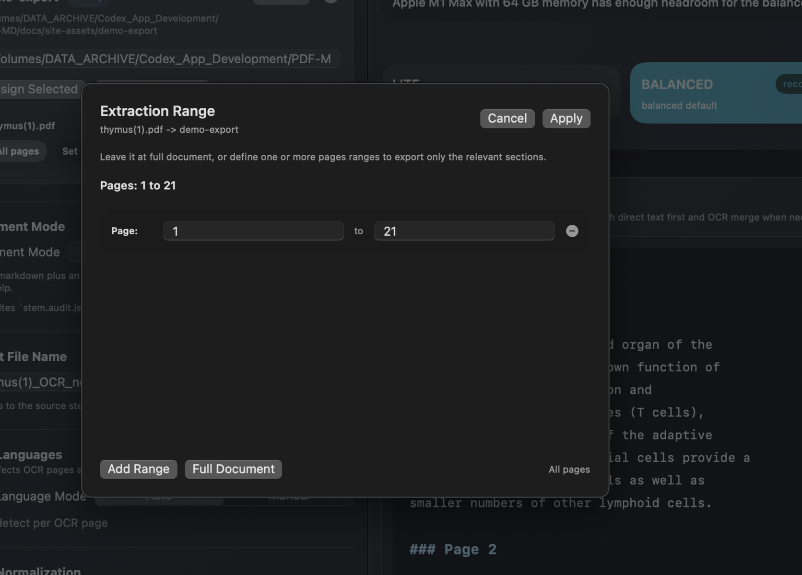

Cleaner output
Exported markdown is cleaned up for practical use, so it reads more like working text and less like a raw extraction.
pdf.md is a macOS app for converting difficult documents into readable, editable markdown. It handles PDFs, including PDFs with embedded images, and supports common presentation and image formats.
Built for
Designed for cases where the document format should not block downstream work.
What
pdf.md is built for documents that break normal copy and paste workflows: difficult PDFs, slide decks, image-based material, and mixed-content files that are awkward to reuse.
The result is straightforward: markdown that is easier to read, edit, search, quote, and continue working with.
Why
Exported markdown is cleaned up for practical use, so it reads more like working text and less like a raw extraction.
Once content is in markdown, it is easier to edit, organize, search, quote, and move into notes, drafts, or study material.
pdf.md reduces the time spent fixing formatting and extracting usable text from difficult source files.
How
The example below uses the first page of thymus(1).pdf:
from the original source page, through pdf.md preview and export, to the
final markdown file.

The source can begin as a PDF, including PDFs with embedded images, or as a supported presentation or image file.



The output is a standard markdown file with cleaned, readable structure that is easier to edit, search, quote, and reuse.
Technical Specifications

Page Inspection
Open a full-page preview to verify the source before export.

Range Control
Limit export to the relevant page range instead of processing the entire document.

Post-Export Review
Review the generated markdown in the app immediately after export.
Buy
Personal License
$29
One-time purchase
Checkout is being finalized. For early access, licensing questions, or support, contact worldpresident1030@gmail.com.
Built for documents that do not convert cleanly, including PDFs with embedded images, presentation files, and image-based source material.